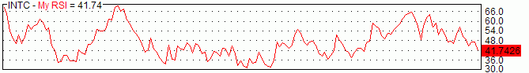
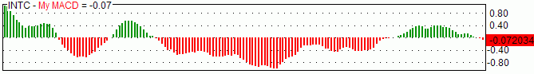
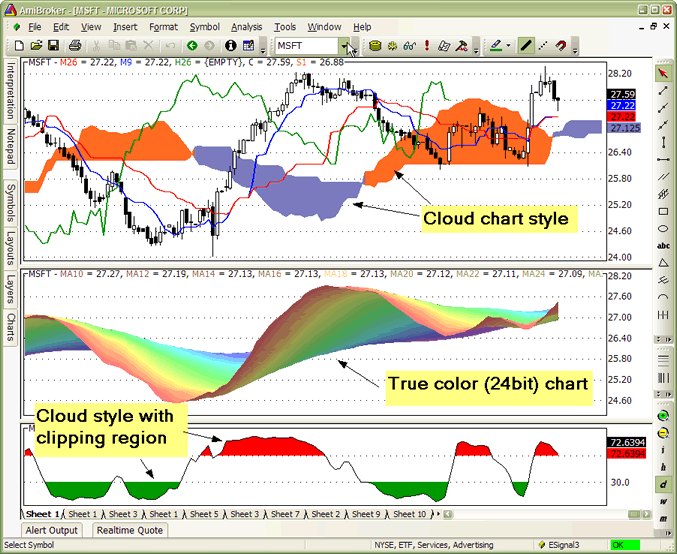
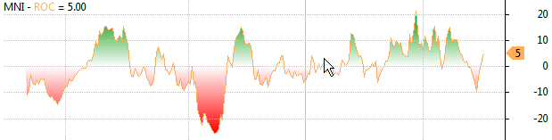
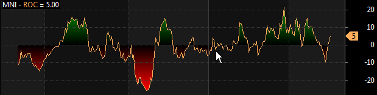

AmiBroker provides customizable styles and colors of graphs in custom indicators. These features allow more flexibility in designing your indicators. This article will explain how to use styles and colors. It will also explain how to define the chart title that appears at the top of the chart.
Plot() function
Plot is the function used to plot a chart. It takes 9 parameters, of which the first 3 are required.
Plot( array, name, color, style = styleLine, minvalue = Null, maxvalue = Null, XShift = 0, ZOrder = 0, width = 1 )
An example, the following single function call plots an RSI indicator with a red color line:
Plot( RSI(14), "My RSI", colorRed );
As you can see, we have provided only the first three (required) parameters. The first parameter is the array we need to plot. In our example, it is the RSI(14) indicator. The second parameter is just the name. It can be any name you want. It will be displayed in the title line along with the indicator value as shown in the picture below:

The third parameter is the color. To specify the plot color, you can use one of the following pre-defined constants:
| Color constants |
|
Custom colors refer to the user-defined color palette editable using Tools->Preferences->Colors; the numerical values that appear after = (equals) mark are for reference only, and you don't need to use them. Just use the name such as colorDarkGreen. colorCustom1 = 0 colorBlack = 16 colorDarkRed = 24 colorRed = 32 colorPink = 40 colorRose = 48 You can also use the new 24-bit (full color palette) functions ColorRGB and ColorHSB |
You can easily plot multi-colored charts using both Plot functions. All you
need to do is to define an array of color indexes.
In the following example, MACD is plotted with green when it is above zero
and with red when it is below zero.
dynamic_color = IIf( MACD() > 0, colorGreen, colorRed );
Plot( MACD(), "My MACD", dynamic_color );
In addition to defining the color, we can supply the 4th parameter that defines the style of the plot. For example, we can change the previous MACD plot to a thick histogram instead of a line:
dynamic_color = IIf( MACD() > 0, colorGreen, colorRed );
Plot( MACD(), "My MACD", dynamic_color, styleHistogram | styleThick );
As you can see, multiple styles can be combined together using | (binary OR) operator. (Note: the | character can be typed by pressing the backslash key '\' while holding down the SHIFT key). The resulting chart looks like this:

To plot a candlestick chart, we use the styleCandle constant, as in this example:
Plot( Close, "Price", colorBlack, styleCandle );
To plot traditional bars with color (green up bars and red down bars), we just specify the color depending on the relationship between open and close prices and styleBar in style argument:
Plot( Close, "Price", IIf( Close > Open, colorGreen, colorRed ), styleBar | styleThick );
All available style constants are summarized in the table below.
| Style constants |
|
Style is defined as a combination (using either addition (+) or binary OR (|) operator) of one or more of the following flags (you can use predefined style__ constants instead of numbers) styleLine = 1 - normal (line) chart (default) Not all flag combinations make sense; for example, (64+1) (candlestick
+ line) will result in a candlestick chart (style=64) |
The new `styleCloud` and `styleClipMinMax` styles bring new, interesting possibilities shown in the sample image below:

The formula for the chart in the middle pane (rainbow 24-bit multiple moving averages) looks as follows:
side = 1;
increment = Param("Increment",2, 1, 10, 1 );
for( i = 10;
i < 80; i = i + increment
)
{
up = MA( C,
i );
down = MA( C,
i + increment );
if( ParamToggle("3D
effect?", "No|Yes", 1 )
)
side = IIf(up<=down AND Ref(
up<=down, 1 ), 1, 0.6 );
PlotOHLC( up,up,down,down, "MA"+i, ColorHSB( 3*(i
- 10),
Param("Saturation", 128, 0, 255 ),
side * Param("Brightness", 255, 0, 255 )
), styleCloud | styleNoLabel );
}
The formula for the chart in the lower pane (slow stochastic %K with colored tops and bottoms) looks as follows. It uses `styleClipMinMax` to achieve clipping of the cloud region between minimum and maximum levels specified in the plot statement. Without this style, the area between min/max would be filled. Please note that due to Windows GDI limitation, clipping region (`styleClipMinMax`) is supported only on raster (bitmap) devices, so it is not compatible with printers or WMF (Windows Metafile) output.
SetChartOptions(0,0,ChartGrid30
| ChartGrid70 );
r = StochK(14);
Plot( r, "StochK", colorBlack );
PlotOHLC( r,r,50,r, "", IIf(
r > 50, colorRed, colorGreen ), styleCloud |
styleClipMinMax, 30, 70 );
X-shift feature
The XShift parameter allows to displace (shift) the plot in the horizontal direction by a specified number of bars. This allows for plotting displaced moving averages and projections into the future. See the following sample code for a displaced moving average:
Periods = Param("Periods", 30, 2, 100 );
Displacement = Param("Displacement", 15, -50, 50 );
Plot( MA( C, Periods ), _DEFAULT_NAME(), ColorCycle, styleLine, 0, 0, Displacement );
PlotForeign() function
It is now easy to overlay price plots of multiple symbols using the `PlotForeign` function:
PlotForeign( tickersymbol, name, color/barcolor, style = styleCandle | styleOwnScale, minvalue = {empty}, maxvalue = {empty}, xshift = 0)
Plots the foreign-symbol price chart (the symbol is defined by the tickersymbol parameter).
The second argument, name, defines the graph name used for displaying values in
a title bar. Graph color could be static (if the third argument is a number) or
dynamic (when the third argument is an array). Color indexes are related to the
current palette (see Preferences -> Colors)
style defines the chart plot style (see Plot() function for possible values)
PlotForeign( "^DJI", "Dow Jones", colorRed );
PlotForeign( "^NDX", "Nasdaq 100", colorBlue );
PlotForeign( "^IXIC", "Nasdaq Composite", colorGreen );
Multiple plots using different scaling
Two new styles can be used to plot multiple graphs using different Y-scales: `styleOwnScale` and `styleLeftAxisScale`.
It also makes it easy to plot two or more "own scale" plots with the same scaling:
minimum = LastValue( Lowest( Volume ) );
maximum = LastValue( Highest( Volume ) );
Plot( Close, "Price", colorBlue, styleCandle );
/* two plots below use OwnScale but the scale is common because we set min and max values of Y axis */
Plot( Volume, "Volume", colorGreen, styleHistogram | styleThick | styleOwnScale, minimum, maximum );
Plot( MA( Volume, 15 ), "MA volume", colorRed, styleLine | styleOwnScale, minimum, maximum );
The new style `styleLeftAxisScale = 65536` - allows to plot more than one graph
using common scaling but different from the regular (right-axis) scale.
Example: price plot plus volume and moving average plots:
// Plot price plot and its moving average
Plot( Close, "Price", colorWhite, styleCandle );
Plot( MA( Close, 20 ), "MAC", colorRed );
// Now plot volume and its moving average using left-hand axis scaling
Plot( Volume , "Volume", colorBlue, styleLeftAxisScale | styleHistogram | styleThick );
Plot( MA( Volume,15), "MAV", colorLightBlue, styleLeftAxisScale );
New parameters also make it easy to plot ribbons, for example:
Plot( Close, "Price", colorBlue, styleCandle );
Plot( 2, /* defines the height of the ribbon in percent of pane width */
"Ribbon",
IIf( up, colorGreen, IIf( down, colorRed, 0 )), /* choose color */
styleOwnScale|styleArea|styleNoLabel, -0.5, 100 );
Using custom-defined parameters
AmiBroker allows for the creation of user-defined parameters. Such parameters are then available via the Parameters dialog for quick and fast adjustment of indicators.
The most often used parameter functions are (click on the links to get a more detailed description):
These functions make it possible to define your own parameters in your indicators. Once `Param` functions are included in the formula, you can right-click over the chart pane and select "Parameters" or press Ctrl+R, and change them via the Parameters dialog to get an immediate response.
The simplest case looks like this:
period = Param("RSI period", 12, 2, 50, 1 );
Plot( RSI( period ), "RSI( " + period + ") ", colorRed );
Right-click over the chart and choose "Parameters" and move the slider and you will see RSI plotted with different periods immediately as you move the slider.
Sample code below shows how to use ParamStr to get the ticker symbol and ParamColor to get colors.
ticker = ParamStr( "Ticker", "MSFT" );
sp = Param( "MA Period", 12, 2, 100 );
PlotForeign( ticker, "Chart of "+ticker,
ParamColor( "Price Color", colorBlack ), styleCandle );
Plot( MA( Foreign( ticker, "C" ), sp ), "MA", ParamColor( "MA Color", colorRed ) );
The following sample formula (from the AmiBroker mailing list) that allows you to visually align price peaks/troughs with a sine curve on the chart:
Cycle = Param("Cycle Months", 12, 1, 12, 1 )*22;//264==12mth,22==1mth
xfactor = Param("Stretch",1,0.1,2,0.1);//1==1yr,2==2yr
xshift = Param("slide",0,-22,22,2)/3.1416^2;//slide curve 1==5days
x = 2*3.1416/Cycle/xfactor;
y = sin(Cum(x)-xshift);
Plot(C,"Daily Chart", colorBlack, styleCandle | styleNoLabel);
Plot(y,
"cycle =" + WriteVal(Cycle*xfactor/22,1.0)+"months",
colorBlue,styleLine|styleNoLabel|styleOwnScale);
Right-click over the chart and choose "Parameters" and move the sliders and you will see the chart immediately reflecting your changes.
For more information on user-definable parameters, please also check Tutorial: Using drag-and-drop interface
Plotting texts at arbitrary positions on the chart
AmiBroker now allows for annotation of the chart with text placed at any x, y position specified on the formula level using the new PlotText function.
PlotText( "text", x, y, color, bkcolor = colorDefault )
where
x - the x-coordinate in bars (like in LineArray)
y - the y-coordinate in dollars
Color is the text color; bkcolor is the background color. If bkcolor is NOT specified (or is equal to `colorDefault`), text is written with a TRANSPARENT background; any other value causes a solid background with the specified background color
Plot(C,"Price", colorBlack, styleLine );
Plot(MA(C,20),"MA20", colorRed );
Buy=Cross( C, MA(C,20 )
);
Sell= Cross( MA( C, 20 ), C );
dist = 1.5*ATR(10);
for( i = 0;
i < BarCount;
i++ )
{
if( Buy[i]
) PlotText( "Buy\n@" + C[
i ], i, L[ i ]-dist[i], colorGreen );
if( Sell[i]
) PlotText( "Sell\n@" + C[
i ], i, H[ i ]+dist[i], colorRed, colorYellow );
}
PlotShapes( Buy * shapeUpArrow + Sell * shapeDownArrow, IIf( Buy, colorGreen, colorRed )
);
Gradient fill of the background
AmiBroker 4.90 allows filling the indicator background with a gradually changing color. To achieve this, you need to use the new function `SetChartBkGradientFill`( topcolor, bottomcolor, titlebkcolor = default )
The function enables background gradient color fill in indicators.
Please note that this is independent of the chart background color (background
color fills the entire pane; gradient fill is only for the actual chart interior,
so the axes area is not affected by gradient fill). Parameters are as follows:
topcolor - specifies the top color of the gradient fill
bottomcolor - specifies the bottom color of the gradient fill
titlebkcolor - (optional) the background color of the title text. If not specified,
then the top color is
automatically used for the title background.
Example:
SetChartBkGradientFill( ParamColor("BgTop", colorWhite),ParamColor("BgBottom", colorLightYellow));
Version 5.60 brings native gradient area charts. To display a simple gradient chart, it is enough to use styleGradient in the Plot() function call. By default, the upper gradient color is specified by the color parameter in Plot() function; the bottom gradient color is either the background color. `styleGradient` can be combined with `styleLine`.
Plot( C, "C", colorDefault, styleGradient | styleLine );
For detailed control over gradient colors and baseline, there is an extra function SetGradientFill( topcolor, bottomcolor, baseline, baselinecolor ) that should be called before Plot().
When you use SetGradientFill function, the upper gradient color is specified by the topcolor argument; the bottom gradient color is specified by bottomcolor. Optional parameters (baseline/baselinecolor) allow for a reverse gradient chart (such as underwater equity) and three-color gradients top->baseline->bottom. See code for Underwater Equity for example usage of reverse gradient chart (with baseline at the top). The Baseline parameter specifies the Y-axis position of the chart baseline. The baselinecolor parameter specifies the color of the gradient that is to be used at that level. If baselinecolor is not specified, then only 2-color gradient is plotted (topcolor->bottomcolor).
For example, to display a three-color gradient Rate of Change that will use green as the "top" color for positive values, the background color as the "baseline" color and red as the "bottom" color for negative values, it is enough to write:
SetGradientFill( colorGreen /*top*/, colorRed /*bottom*/, 0 /*baseline
level*/, GetChartBkColor() /*baseline
color */);
Plot( ROC( C, 14), "ROC", colorLightOrange, styleLine | styleGradient, Null, Null, 0,
-1 );
The resulting chart will look as follows (using Basic chart theme):

or this way (using Black chart theme):

Version 5.60 allows defining the line width beyond `styleThick` that was the only option before.
Now, the 9th parameter of Plot() defines pixel or percent width of a given plot. The default is 1 pixel. Positive values specify pixel width, negative values specify width as a percentage of current bar width. For example, -20 will give you a dynamic width that is 20% of the bar width. Example:
Plot( C, "Close", colorDefault, styleBar, Null, Null, 0, 1,
-20 /*
line width as percent of bar */ );
As you zoom in, the bars will become thicker and thicker.
Now you can get super-thick lines as shown in the example below (10-pixel thick line chart):
Plot( C, "Close", colorRed, styleLine, Null, Null, 0, 1, 10 /*
10 pixel wide */ );
Miscellaneous
As you already know, each plot has its own name that is used to create a title string which displays names and values of indicators. AmiBroker, however, allows you to override this automatic mechanism and define your own title string from scratch. The Title reserved variable is used for that. You just assign a string to it, and it will be displayed in the chart instead of the automatically generated one.
Also, there are two more reserved variables (GraphXSpace and GraphZOrder) that allow for fine-tuning the indicator's look.
They are all described in the table below.
| Variable | Usage | Applies to |
| Title |
Defines title text `EncodeColor( colornumber )`. For the sake of completeness: colors can
also be specified using escape sequences but it is NOT recommended because
it is hard to write and hard to read. A `\\cXX` sequence where `XX` is a two-digit
number specifying color index. `\\c38` defines violet;
there
is
a special
sequence
`\\c-1`
that resets
to the default axis color. |
Indicators |
| Tooltip | Obsolete in 5.40. Use the Data window instead, or use `Plot()` with `styleHidden` if you want to add your custom values to the data tooltip. For example: |
Indicators |
| GraphXSpace | Defines how much extra space should be added above and below
the graph line (in percent). Adds 5% extra space above and below the graph line. When `GraphXSpace` is not defined in the formula, then the default 2% is used. |
Indicators |
| GraphLabelDecimals | (new in 5.90) Controls the number of decimals in chart value labels (for example, adding `GraphLabelDecimals = 2;` to the formula would give
you
value labels
with two decimal places) |
Indicators |
| GraphZOrder | The `GraphZOrder` variable allows changing the order of plotting indicator lines. When `GraphZOrder` is not defined or is zero (false), the old ordering (last to first) is used; when `GraphZOrder` is 1 (true), reverse ordering is applied. | Indicators |
Obsolete graph variables
This table shows obsolete reserved variables. They are still functional for backward-compatibility, but new code should use `Plot()` functions only. What's more, when using new `Plot()` functions, you should NOT use obsolete variables below.
| Variable | Usage | Applies to |
| maxgraph | Specifies the maximum number of graphs to be drawn in a custom indicator window (default=3) | Indicators |
| graphN | Defines the formula for the graph number N (where N is a number 0,1,2,..., maxgraph-1) | Indicators |
|
graphNopen, |
Define additional O, H, L price arrays for candlestick and traditional bar charts | Indicators |
| graphNcolor |
Defines the color index of Nth graph line. Color indexes are related to the current palette (see Preferences -> Colors).
|
Indicators |
| graphNbarcolor | Defines the array that holds palette indexes for each bar drawn | Indicators |
| graphNstyle |
Defines the style of Nth graph. Style is defined as a combination (sum) of one or more of the following flags (you can use predefined style__ constants instead of numbers) |
Indicators |
{kind=link}